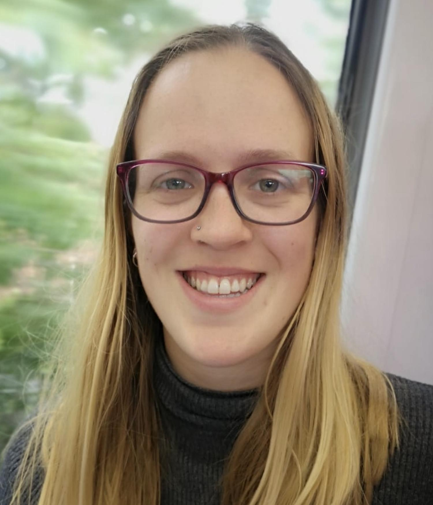
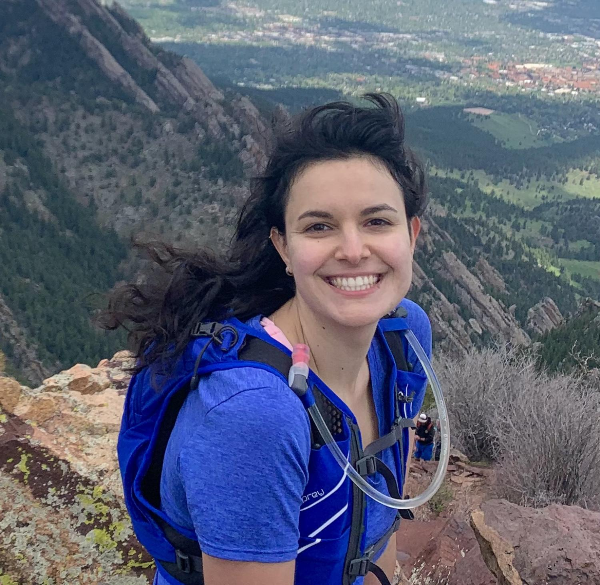
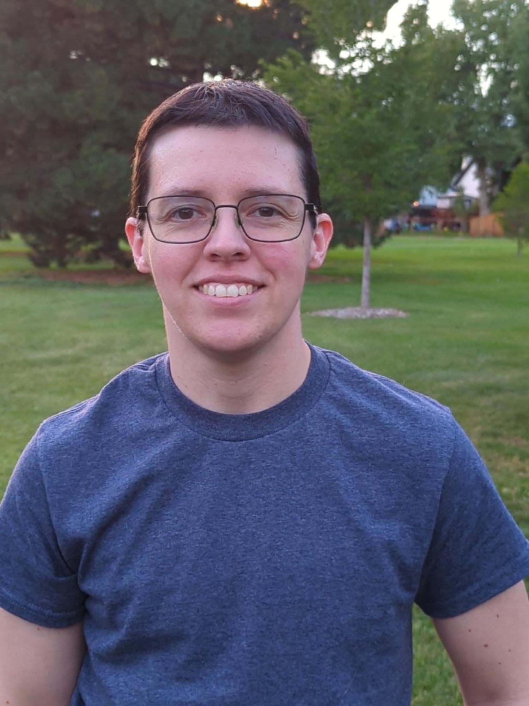
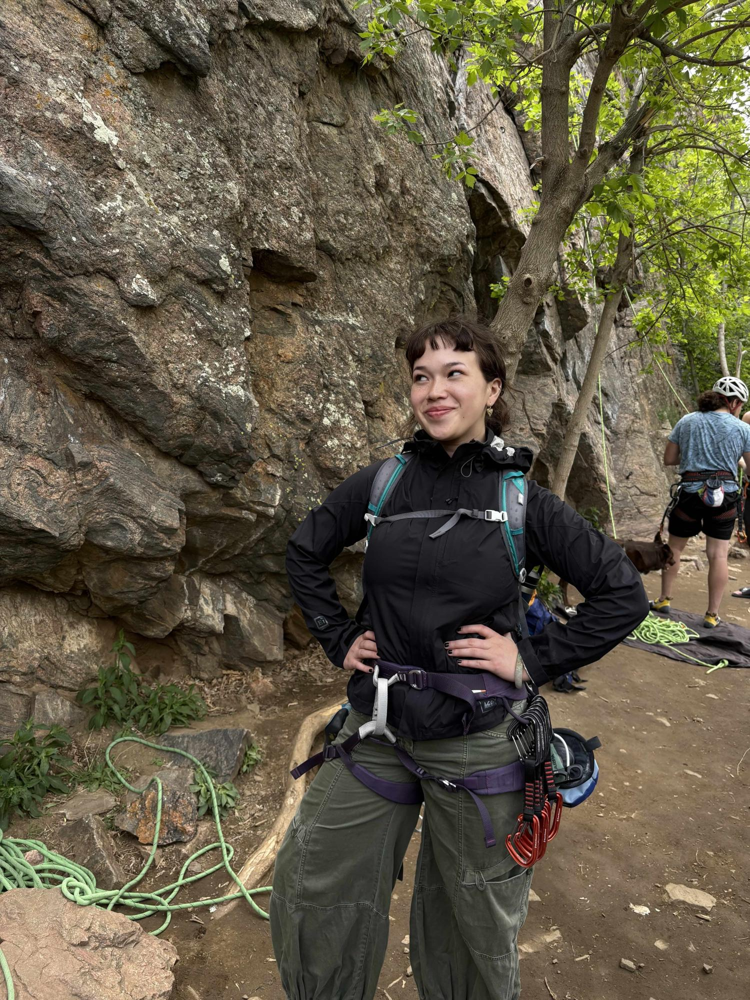
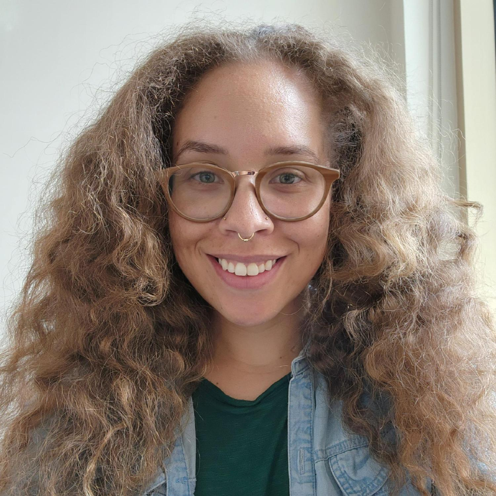
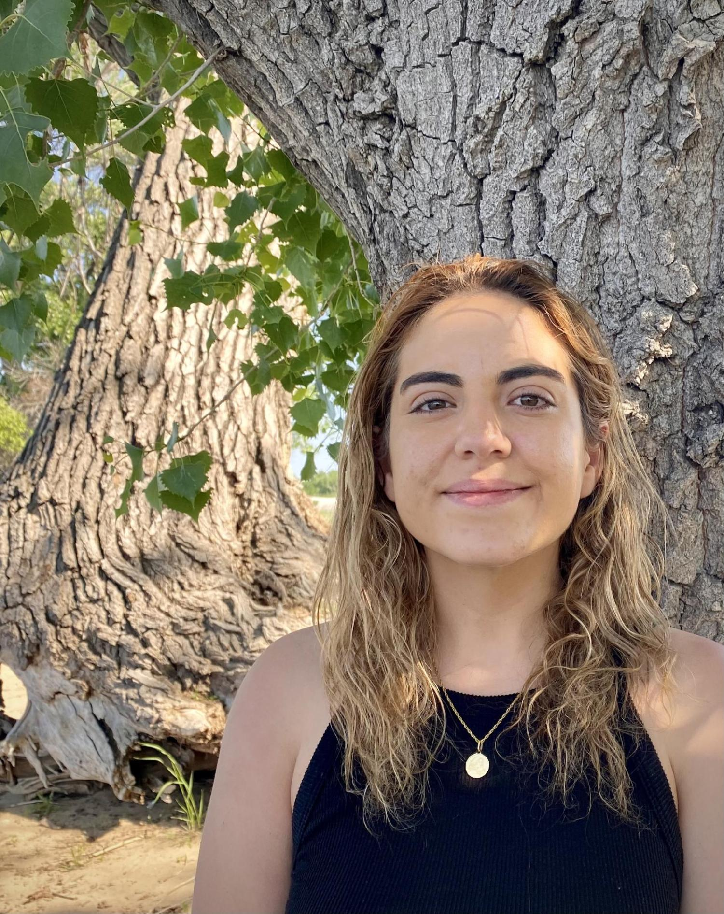
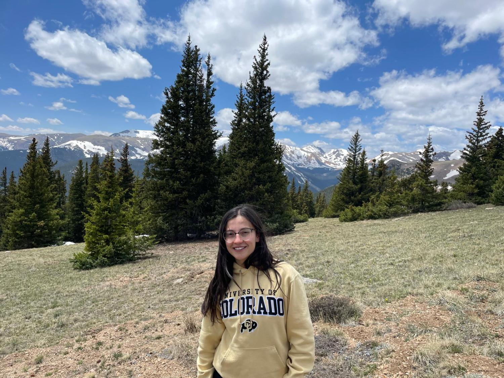

TEAM _
The Chuong lab is dedicated to promoting an inclusive and welcoming environment for scientists from all backgrounds.
Ed Chuong
Principal InvestigatorAssociate Professor, MCDB & BioFrontiers
Giulia Pasquesi
Postdoc • Sie Fellow • NIH K99TE-derived isoforms & IFN signaling

Holly Allen
Lab Manager / Staff ScientistGenome editing

Atma Ivancevic
Research AssociateComputational genomics & TE biology

Lynn Sanford
Research StaffTE regulatory switches in cancer

Mia Chaw
Professional Research AssistantImmune epigenetics

Olivia Joyner
Graduate Student • MCDBTEs as regulatory elements in disease

Andrea Ordonez
Graduate Student • MCDBNovel TE-derived receptor isoforms
Jimmy Pazzanese Jr
Graduate Student • MCDBTE-containing splice isoforms

Carolina Valderrama Hincapie
Graduate Student • MCDB/IQ BioChromatin-mediated disease
Ashley Agyepong
Undergraduate • Boettcher ScholarMCDB
ALUMNI
Carmen Buttler (Scientist, Darwin Biosciences)
Yazmyn Chavez (Medical Assistant, Injury Solutions)
Adam Dziulko (Grad student, MCDB/IQ Bio)
Keala Gapin (PhD, Stanford Immunology)
Stella Haskins (UC Santa Barbara)
Alex Hirano (Technician, Mass General Hospital)
Bella Horton (MD/PhD, U. Maryland)
Doreen Idonije
Abigail Jeong (Research, U. Regensberg)
Conor Kelly (PhD, UW Genome Sciences)
Tania Lara (Metro State University)
Alice Mueller (PhD, Johns Hopkins)
Chris Mulligan (PhD, UC Davis)
Lily Nguyen (MD, CU Anschutz)
David Simpson (Lab Ops Manager, Arpeggio Biosciences)
Rebecca Su (PhD, Weill Cornell Medicine)
Kevin Veno (NSA)
Yuanyuan Xie (BD Senior Manager, Worg Pharma)
JOIN THE TEAM?
Ed accepts PhD students through MCDB, BCHM, or IQ Biology programs. Inquiries about technician or postdoctoral positions: edward.chuong@colorado.edu